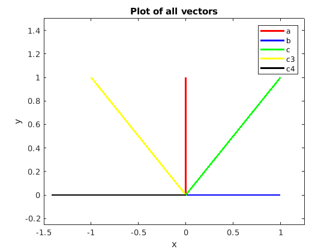

Contents
Homework 0 - Question 2 - Mrugank Dake
clear; clc; close all;
2a)
Vectors a and b are unit-length vectors and we can center them at 0. The If the two vectors are aligned with the tip of vector b sitting on the top of vector a, then the vector c which represents the hypotenuse of the resulting triangle is given as the sum of the vectors a and b. The length of the hypotenuse is then the length of the vector c, which is defined as the positive square-root of the sum of the two co-ordinates of the vector.
a = [0 1]; b = [1 0]; c = a + b; hypotenuse_length = abs(sqrt(c(1)^2 + c(2)^2)); disp(['The length of the hypotenuse i.e. vector c is: ', num2str(hypotenuse_length)]); % As can be seen, the length of the resulting hypotenuse vector agrees with % what we computed in question 1
The length of the hypotenuse i.e. vector c is: 1.4142
2b)
(1)
met1_length = abs(sqrt(c(1)^2 + c(2)^2)); disp(['The length of the vector c using method 1 is: ', num2str(met1_length)]); % (2) met2_length = abs(sqrt(sum(c.^2))); disp(['The length of the vector c using method 2 is: ', num2str(met2_length)]); % (3) met3_length = abs(sqrt(dot(c, c))); disp(['The length of the vector c using method 3 is: ', num2str(met3_length)]); % (4) met4_length = norm(c, 2); disp(['The length of the vector c using method 4 is: ', num2str(met4_length)]); % (4) met5_length = abs(sqrt(c * c')); disp(['The length of the vector c using method 5 is: ', num2str(met5_length)]);
The length of the vector c using method 1 is: 1.4142 The length of the vector c using method 2 is: 1.4142 The length of the vector c using method 3 is: 1.4142 The length of the vector c using method 4 is: 1.4142 The length of the vector c using method 5 is: 1.4142
2c)
The angle between the two vectors can be computed as the arccos of the ratio of the dot product of two vectors and the product of norms of the two vectors
theta = acos(dot(c, a) / (norm(c, 2) * norm(a, 2))); disp(['The angle between the vectors c and a is: ', num2str(theta)]) % Unit vector using shrinking the vector by its norm c_hat_rescaling = c / norm(c, 2); disp(['The unit vector obtained by shrinking vector c is : ']) disp(c_hat_rescaling) % Unit vector using the angle theta c_hat_angle = [cos(theta) sin(theta)]; disp(['The unit vector obtained using the angle theta is : ']) disp(c_hat_angle) % Vector with same length as of c but with angle that is 3 times theta can % be obtained by taking a unit vector using cos(3 * theta) and sin(3 * % theta) and multiplying the vector by the length of the vector c c3 = hypotenuse_length * [cos(3 * theta) sin(3 * theta)]; disp('Vector with the same length as that of vector c but with angle 3 times that of theta is:') disp(c3) % Vector with same length as of c but with angle that is 4 times theta can % be obtained by taking a unit vector using cos(4 * theta) and sin(4 * % theta) and multiplying the vector by the length of the vector c c4 = hypotenuse_length * [cos(4 * theta) sin(4 * theta)]; disp('Vector with the same length as that of vector c but with angle 4 times that of theta is:') disp(c4)
The angle between the vectors c and a is: 0.7854
The unit vector obtained by shrinking vector c is :
0.7071 0.7071
The unit vector obtained using the angle theta is :
0.7071 0.7071
Vector with the same length as that of vector c but with angle 3 times that of theta is:
-1.0000 1.0000
Vector with the same length as that of vector c but with angle 4 times that of theta is:
-1.4142 -0.0000
2d, 2e, 2f)
All the vectors can be plotted using the plot function and specifying the vectors x and y co-ordinates. Additionally a displayname and linewidth is added. The displayname is then used to prepare the legend. The graph also has x and y labels and title. The x and y scale limits are set to ensure an appropriate visibility of the vectors plotted. saveas function is used to save the figure as Matlab readable .fig format and printable .png format
fig = figure; plot([0 a(1)], [0 a(2)], 'r', 'DisplayName', 'a', 'LineWidth', 2); hold on; plot([0 b(1)], [0 b(2)], 'b', 'DisplayName', 'b', 'LineWidth', 2); plot([0 c(1)], [0 c(2)], 'g', 'DisplayName', 'c', 'LineWidth', 2); plot([0 c3(1)], [0 c3(2)], 'y', 'DisplayName', 'c3', 'LineWidth', 2); plot([0 c4(1)], [0 c4(2)], 'k', 'DisplayName', 'c4', 'LineWidth', 2); legend(); xlim([-1.5 1.25]); ylim([-0.25 1.5]); xlabel('x'); ylabel('y'); title('Plot of all vectors'); saveas(fig, 'Plot of all vectors.fig') saveas(fig, 'Plot of all vectors.png')